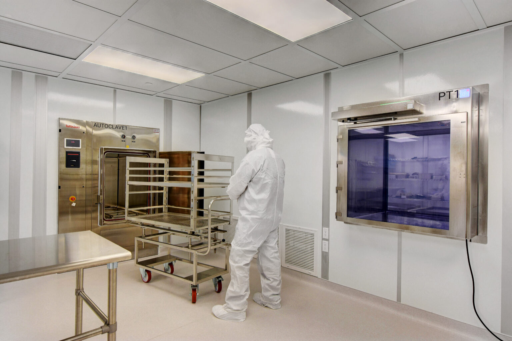

Background: I used to work in a cleanroom for a pharmaceutical. The cleanrooms were bright and had high ventilation. The ventilation created positive pressure in the rooms so clean air is always pumped out to avoid the risk of containation getting in. I am now studying Computer Science and exploring web dev with this class.
Interests: I enjoy horror and space movies. In no particular order, some of my favorites are: Hereditary, Midsommar, Event Horizon, and Martian. The intrigue of mystery, the unknown, and the unexplored elicit very strong feelings of isolation and terror.
Experiences: I have experience with systems languages such as C and C++. Topics such as operating systems and emulation have always fascinated me. Imagine you are a program in an environment that is perfectly simulating the expected inputs and outputs. The simulated program nevers knows it's being simulated. Did I mention I like horror movies and stories?